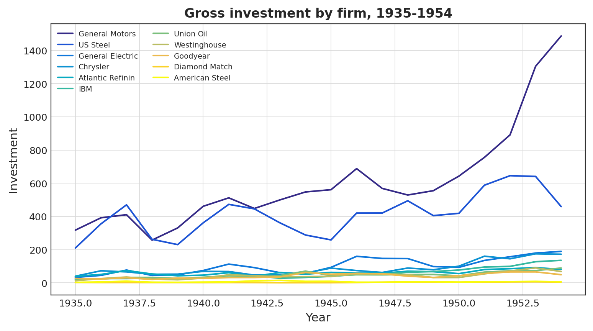
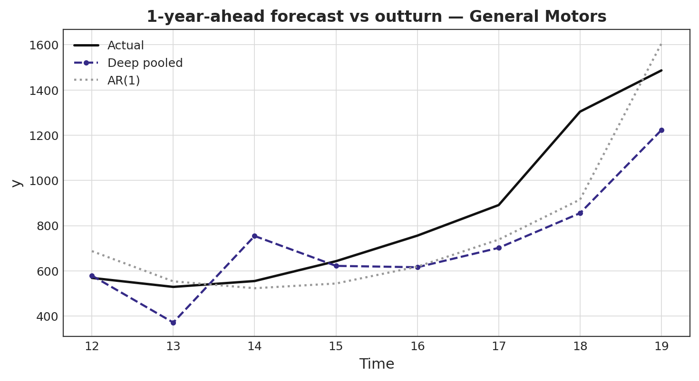
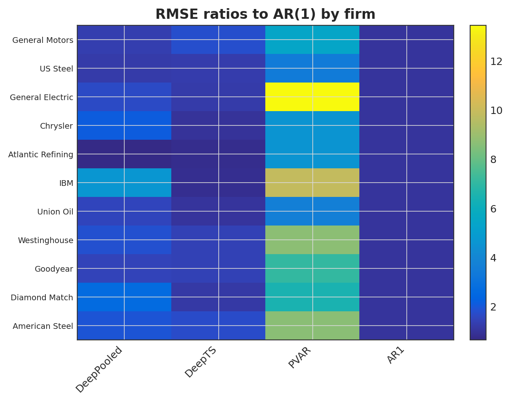
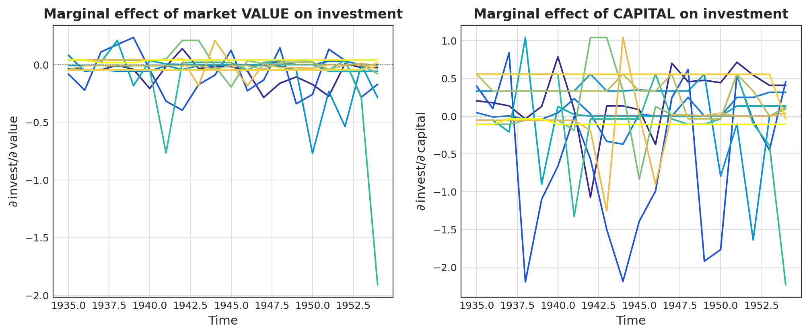
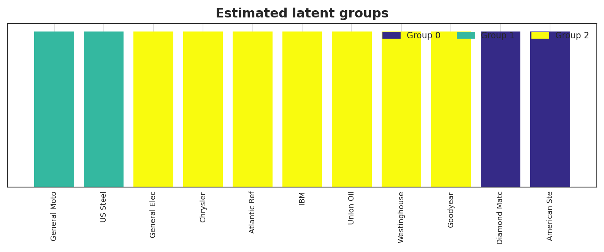
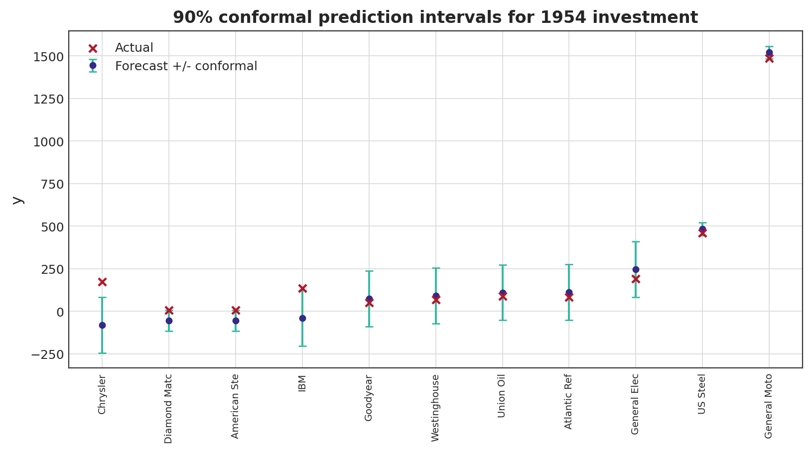

§1What is deeppanel?
deeppanel is a faithful Python implementation of three recent papers on deep learning for panel data. It brings modern neural-network estimators to panel forecasting while keeping the things econometricians need: interpretable marginal effects, specification tests, benchmarks, and honest prediction intervals.
Two estimator families
Deep pooled panel — a common nonlinear function shared across units (plus an optional unit-specific part), with partial-derivative interpretability, a nonlinear poolability test, and AR / panel-VAR / deep-time-series benchmarks.
LDPM — surrogate augmentation, Deep Panel Training with classifier-LASSO homogeneity pursuit (latent groups), and within-group split-conformal prediction intervals.
§2The methods in one page
The deep pooled panel models the nonlinear conditional mean as a common part $h$ plus an optional idiosyncratic part $h_i$:
where $h$ is a feed-forward ReLU network with a linear output, estimated by pooled least squares over all units and periods:
Interpretability
Exact partial derivatives $\partial g/\partial x$ (via autograd) give time- and unit-varying marginal effects — opening the black box.
Specification
A nonlinear poolability test decides whether unit-specific components are needed beyond the common function.
Homogeneity pursuit
A classifier-LASSO product penalty pulls unit heads toward latent group centres, recovering clusters of units that share a response.
Conformal intervals
Split-conformal calibration within each group yields distribution-free prediction intervals with valid marginal coverage.
§3Papers implemented
Chronopoulos, Chrysikou, Kapetanios, Mitchell & Raftapostolos. Forecasting with Deep Pooled Panel Neural Networks. Econometric Reviews (2026). doi:10.1080/07474938.2026.2660660 — and the working paper Deep Neural Network Estimation in Panel Data Models, FRB Cleveland WP 23-15 (2023), doi:10.26509/frbc-wp-202315.
Gao, Sun, Wang, Liu & Hsiao. How Does LLM Help Regional CPI Forecast: An LLM-powered Deep Panel Modeling Framework (2026).
Every estimator is checked equation-by-equation and validated on the papers' own simulation designs — see the compatibility map.
§4Case study: the Grunfeld investment panel
We apply deeppanel to a classic real panel — gross
investment of 11 US firms over 1935–1954 — modelled as a nonlinear function of
market value, capital, and lagged
investment. Investment is highly heterogeneous and cyclical: the ideal setting for a
pooled nonlinear model.

Firm averages (Grunfeld)
| mean invest | mean value | mean capital | |
|---|---|---|---|
| firm | |||
| General Motors | 608.000 | 4333.800 | 648.400 |
| US Steel | 410.500 | 1971.800 | 294.900 |
| General Electric | 102.300 | 1941.300 | 400.200 |
| Chrysler | 86.100 | 693.200 | 121.200 |
| Atlantic Refining | 61.800 | 231.500 | 486.800 |
| IBM | 55.400 | 419.900 | 104.300 |
| Union Oil | 47.600 | 149.800 | 314.900 |
| Westinghouse | 42.900 | 670.900 | 85.600 |
| Goodyear | 41.900 | 333.600 | 297.900 |
| American Steel | 6.800 | 57.500 | 68.000 |
| Diamond Match | 3.100 | 70.900 | 5.900 |
§5One-year-ahead forecasting & benchmarks
The deep pooled model forecasts next year's investment from this year's regressors (direct horizon $h=1$), and is compared against a deep time-series model (no pooling), a panel VAR, and an AR(1), by RMSE ratios and Diebold–Mariano tests.
Out-of-sample RMSE (pooled over firms and origins)
| RMSE | ratio to AR1 | |
|---|---|---|
| DeepPooled | 85.851 | 1.329 |
| DeepTS | 103.433 | 1.602 |
| PVAR | 336.391 | 5.209 |
| AR1 | 64.583 | 1.000 |
Diebold-Mariano tests vs AR(1)
| vs | DM | p_value | mean_dloss | |
|---|---|---|---|---|
| model | ||||
| DeepPooled | AR1 | 2.985 | 0.998 | 3199.483 |
| DeepTS | AR1 | 1.711 | 0.955 | 6527.472 |
| PVAR | AR1 | 3.276 | 0.999 | 108987.861 |


§6Marginal effects & poolability
Partial derivatives give the marginal effect of each regressor on forecast investment, firm by firm and year by year.

Average marginal effects by firm
| d invest / d value | d invest / d capital | d invest / d invest_L1 | |
|---|---|---|---|
| General Motors | -0.071 | 0.227 | 0.699 |
| US Steel | -0.089 | -0.580 | 0.985 |
| General Electric | -0.006 | 0.048 | 0.424 |
| Chrysler | -0.101 | 0.151 | 0.571 |
| Atlantic Refining | -0.003 | 0.026 | 0.180 |
| IBM | -0.155 | -0.001 | 0.846 |
| Union Oil | 0.024 | 0.060 | 0.122 |
| Westinghouse | -0.009 | 0.294 | -0.101 |
| Goodyear | 0.004 | -0.078 | 0.179 |
| Diamond Match | -0.043 | 0.527 | -0.326 |
| American Steel | 0.038 | -0.097 | 0.267 |
Nonlinear poolability test
| P statistic | p-value | units | |
|---|---|---|---|
| 0 | 1.919 | 0.055 | 11 |
§7Latent groups of firms
Deep Panel Training with a classifier-LASSO penalty discovers clusters of firms that share an investment response — a data-driven segmentation with no hand-picked categories.

Estimated latent groups of firms
| group | mean invest | |
|---|---|---|
| Diamond Match | 0 | 3.100 |
| American Steel | 0 | 6.800 |
| General Motors | 1 | 608.000 |
| US Steel | 1 | 410.500 |
| General Electric | 2 | 102.300 |
| Chrysler | 2 | 86.100 |
| Atlantic Refining | 2 | 61.800 |
| IBM | 2 | 55.400 |
| Union Oil | 2 | 47.600 |
| Westinghouse | 2 | 42.900 |
| Goodyear | 2 | 41.900 |
§8Conformal prediction intervals
With no external surrogate, LDPM reduces to Deep Panel Training plus within-group split-conformal intervals. Below are 90% prediction intervals for the final year's investment.

Conformal prediction intervals (last year)
| forecast | lower | upper | actual | |
|---|---|---|---|---|
| General Motors | 1520.800 | 1483.500 | 1558.100 | 1486.700 |
| US Steel | 483.500 | 446.200 | 520.800 | 459.300 |
| General Electric | 246.600 | 83.600 | 409.700 | 189.600 |
| Chrysler | -80.900 | -244.000 | 82.100 | 172.500 |
| Atlantic Refining | 111.200 | -51.900 | 274.200 | 81.400 |
| IBM | -40.600 | -203.600 | 122.500 | 135.700 |
| Union Oil | 109.800 | -53.300 | 272.800 | 89.500 |
| Westinghouse | 91.000 | -72.000 | 254.100 | 68.600 |
| Goodyear | 74.100 | -88.900 | 237.200 | 49.300 |
| Diamond Match | -55.900 | -117.000 | 5.200 | 5.100 |
| American Steel | -54.700 | -115.800 | 6.300 | 6.300 |
§9Quickstart
Install and run your first model in a few lines. The full, copy-paste syntax for every workflow is in the cookbook; the complete real-data walkthrough is the Jupyter notebook.
# pip install deeppanel import numpy as np from deeppanel import PanelData, DeepPooledPanel, TrainConfig # y:(N,T) outcome, X:(N,T,p) regressors — a balanced panel panel = PanelData(y, X, feature_names=["value","capital"]) # or: PanelData.from_long(df, unit="firm", time="year", y="invest", x=["value","capital"]) model = DeepPooledPanel(horizon=1, depth=3, width=24, config=TrainConfig(max_epochs=1000, lr=0.01, seed=0), seed=0) model.fit(panel) yhat = model.forecast(panel) # (N,) one-year-ahead forecast grad = model.partial_derivatives(panel.X[:, -1]) # marginal effects test = model.poolability_test(panel) # specification test
Learn more
📖 Full syntax cookbook — data prep, every option, tables & plots.
📓 Real-data notebook — this entire case study, reproducible.
✅ Paper compatibility map — equation-by-equation faithfulness.
🐙 Source on GitHub · 📦 Package on PyPI